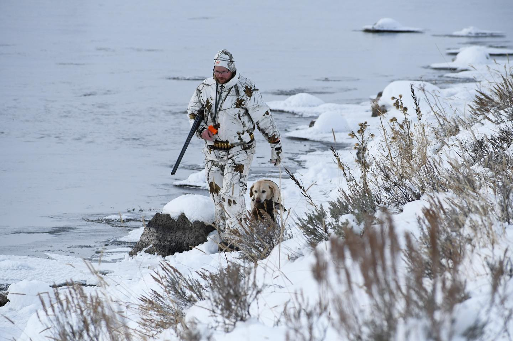

Episode 9 · July 20, 2023 · 4953
Joseph Von Benedikt - The Man the Myth the Legend

About This Episode
In this episode I sit down with my good friend Jospeh Von Benedikt a professional outdoor writer for the hunting and shooting industry. Joseph also owns and operates "The Backcountry Hunting Podcast", which I would definitely recommend a follow and listen over there. In this episode we talk through, dogs, guns, how to fit a shotgun for better shooting, we talk about ammo and the different types and much, much more! Lots of good stuff in this one and hope that you all enjoy it as much as I did making it. If you have any training questions or items of information that you would like to discuss you can email us at "
Questions about the training topics in this episode? Tyce works with bird dog owners and hunters through Utah Bird Dog Training. Reach out to work with him directly.
Resources & Links
- Utah Bird Dog Training — Tyce's professional training services.
Transcript
Full transcript for Episode 9: Joseph Von Benedikt - The Man the Myth the Legend.
Tyce
Hey folks, welcome to the Bird Dog Podcast. My name is Ty Ericks and I'll be your host today. Thanks for joining us. I got a good friend, on the show today.
His name is Joseph on Benedict, and I'm gonna have him do an introduction here in, in just a minute, but we're excited to have him on. If you're interested in sending us any comments or have any questions, you can do that at, the BirdDog podcast gmail.com. That's my email if you want to send us, like, say any, any questions that you'd like us to cover. You can also follow us on the BirdDog Podcast on Instagram, and you can also DM us there. just some information there on how to get ahold of us and communicate with us.
So again, back to my good buddy Joseph, fond Benedict we're really excited to have him on the show, Joseph. Is, outdoor rider, big game enthusiast, hunting, enthusiast hunts, everything. just kinda like myself. I think we're cut out of the same fabric. So I'm excited to have him here.
Joseph, why don't you go ahead and give us, an introduction about yourself. Sure. Well, thanks for having me on the show, Ty. It's a pleasure.
Absolutely. Then I guess the, the quick and dirty version is I grew up with a thirst to hunt and I started writing at a young age as well. My mom tells me I tried to turn every school assignment into a writing assignment on the far end of the stick. I can't do math to save my life, but, yeah, right.
Full time for shooting and hunting magazines now. And I host the Backcountry Hunting podcast as well. Mm-. That's a, a lot of fun and, you and I got to know each other here.
Geez, eight years ago when you were highly recommended by a mutual friend as a dog trainer, and you trained my dog Dixie. Mm-. Who has been just a great, family friend and has retrieved most of the pheasants and other wild birds I've shot in the last eight years. Yeah.
Yeah. yeah, love to hunt. I do a lot of, rifle stuff, a lot of precision stuff, vintage firearm stuff, and archery. So a little bit of everything. Yeah.
So a lot of folks I think, like myself, that listen to this podcast, they're also big game hunters also, bird hunters too. And so, folks, if you are interested in an awesome big game hunting podcast that covers, like I say, Joseph's podcast called the Back Country Hunting Podcast. Jump on there, follow him, subscribe. He's a wealth of information.
You're gonna learn a ton about a ton of different things. And, Joseph, if you have an awesome voice for it too, you're just, you're really good at it. So he's, he's enjoyable to listen to so that you got a great voice for it. I've been told more than once, I have a face for radio, so I, I think you do.
And he's doing good. He's very successful. But please follow him, get on his Patreon, support him, help him, support his family, and, and continuing that on. and follow us, we're a new and up and coming podcasts, or, again, very grateful and lucky to have Joseph here on the podcast. I was thinking back about our relationship.
Yeah. And, and kinda where we started. Has it been about eight years? That's something around there.
It has cuz my dog Dixie turns eight on August 8th this year. Oh, okay. And, so you started training her as a half mature popup? Yeah, that's a eight August.
And so it's the, what do they call that birthday, when your birthday falls on the, isn't there a name for it where your birthday falls on a certain that day of the month? That's the same number. Oh gosh. Your golden birthday.
Is that, is that what they call it? That could be, that's, that's beyond me. I've never been a huge birthday guy. Just, I've always laughed one year closer to the grave.
That's right. I've got two daughters, I always tell 'em until you're 18, you're always gonna wanna be older and after you're 18, you're always gonna wanna be younger. Oh, that is, that, that's the truth, man. It's, it's the truth.
I'm sure you're the same mindset as me is like, every year you get a little, a little one year older and you're just like, man, I gotta stay healthy, I gotta stay in shape cuz I want to still hunt and do the things I want to do. But it gets harder too. Your body doesn't recover and rebound as quick and, and, so those birthdays aren't as exciting so it's not exactly an achievement as much anymore, is it? Yeah. you know, when I was a kid I always laugh when people would say Youth is wasted on the young.
And I'm like, no it's not. I'm enjoying my youth. Yeah, it's wasted. That is, that is true.
So kind of backtracking here. I trained a dog for Joseph and he was one of my past clients and we became friends through that relationship of training his dog for him. And we're actually having another one of his dogs in training then, and he got a pup from me. So that's kind of fun.
We got his name's Hank and he's coming up through the ranks and been in training here. Has it been a couple months or something so far? Yeah. Yeah.
I have it all written down, but anyhow, he's coming along. Gonna be a nice, nice dog but how did we meet again? It was a friend of your, wasn't it? Yeah.
Mutual friend Paul d Oh, that's right. Paul, recommended me, to you. Yep. And I just called you and you said, well, let's meet and talk.
And so we met and talked and felt good about it, and that's when we kind of discovered our mutual love of hunting high country and big game. And so I ended up, you were kind enough to provide some really advanced training on my dog Dixie, that I wouldn't have been able to afford otherwise. But I had a couple of rifles that you liked and so we, we managed to do a little horse training. It was a win-win.
Yes, that's right. Yeah. That rifle has, that rifle has killed some animals too. So I think it was good for both of us.
Hopefully so. Awesome. Yeah. So I remember when you, when you came and picked up Dixie, we went over and worked at, I have a, a good neighbor who has a big, a large pond on it, and there were, it was during the waterfowl season and, the Eurasian doves were over there.
Do you remember that? We were whacking and stacking. I do a few birds over that day. Yeah, I went over expecting to just learn a little bit more about handling my dog and instead, I think I shot a handful of doves and a few ducks and gotta work and watch her work on upland on a waterfowl.
That was a pretty cool day. That was a fun little day. Yeah. we don't do many handoffs like that. So folks, that was kind of a specialty to do a hunt dog training and training the owner and all that stuff.
So No, no, this is, this is protocol now guys, you to provide that for everybody. I'm sure we could work it in I mean, might be a little extra fee, but hey so that was, that was a fun, pickup of your dog when you picked up your dog. I, I think we met up, we generally meet up a handful of times when we get a dog trained to your, your dog's level, yeah. Level.
And so I can't remember if that was the first time or second time or whatever it was. I think it was the second or third, and it was when I actually took her home. So it was the time that I really was just, it was dawning on me how much more of an expert my dog was at that point than I am. So it was kind of fun to see.
Yeah, I think I've talked about that in this podcast is that that's, we can train the dogs, but training. People is, it's, it's a large part of our job, and then it is challenging. You know, some people naturally have knacks to work with animals a little easier than others, but, but we sure do our best to try to train all our clients to our best. And, we want everyone to be successful.
So they put a lot of, money into the dogs. We put a lot of time into 'em, so we want it to be a win for 'em. well, it was sure helpful to me when you taught me how to work her. And then of course you take 'em home and I think one key with me was I got her out as a pup, even if it was just to go shoot a dove try and get her out once a week or so in the fall and, and we had a little pond near where I lived at the time. We'd go and try and shoot a duck and I'd get her sitting up on a little platform or whatever.
Mm-. I was cognizant of the fact at the time that I wasn't real. Adept with the hand signaling and all the different commands that I was supposed to be Yeah. Using for her.
But we figured it out. And over time, I think she, being an intelligent dog more than I'm an intelligent hunter, she probably adapted better than I did. Yeah. To the point where I think we, we understand each other pretty well now, you know?
Oh yeah. It's, a ton of fun. She's getting old now. She's slowing down, which is why Mr.
Hank has joined the team. Yep. Yeah. That's, something when Dixie went home, we didn't do it then, but we do it now, is just part of our training program is we actually create videos for all the clients of their dogs running through everything that it's been trained to do, and actually videos and training sessions.
And I've created instructional videos for clients when their dogs go home so they can go back and watch us as much as they needed. Because I know. You know, and doing those handoffs with you back in the day, it's a lot of information and a lot of people that our brain just become fried or we can't handle that much information. And so a lot of it kind of slips through the cracks, you know?
And so, yeah, created these, you can go back and they watch 'em as many times they need it and really just thoroughly digest that information and then go out and continue to practice with the dog. if you or any other clients have any questions, obviously we're here for you and we'll meet up as much as we need to. But, we feel like those have really helped train our clients better and become better handlers. Sure. Just like anything in work or life you find methods or ways that can, that make things a little better, you know?
So. Yeah. Yeah. I don't know if I've ever fully.
Gone into your background of bird dogs and, and if you had bird dogs growing up or it's kind of a later thing in life, or what, tell me your background on, because this is the Bird Dog podcast about your relationship with dogs. I'm a very late bloomer in the world of bird dogs. Better late than ever. That's right.
And maybe that's why I have such a thrill still being middle aged, but it just, well, hopefully it never wears off. But I absolutely love watching a good working dog and mm-. So what, I grew up in southern Utah, in an area that just didn't have many birds of any sort. We'd run into the occasional grouse while we're all hunting up in the high country.
Mm-. And I shot one or two of those, but that wasn't with dogs. And so really the first dog, bird that I remember, shooting with where dog made a big difference was on a, a little, lake, really a pond. It wasn't manmade, but, in in the outskirts of town, belonged to another landowner, but I'd seen some ducks coming and going on it.
Mm-. So I asked for permission and wandered over there and basically just stuck my head up over and a ridge on the one side of it. And ducks came up and I shot. I was shooting an old, old shotgun at the time.
I don't even remember what shells I had in them. Statue of limitations is many decades gone, so I can probably safely guess that I was shooting lead. Yeah. I just didn't know any better I was with my teens and I didn't have a bird hunting mentor at all.
Yeah. And so this, this big duck goes crumpling in the air like you love to see it. Sure. So then I was jubilant and then he goes, Ew, who into that water?
And I thought, oh my gosh, now what am I gonna do? And just as I was thinking that this big. Catahoula cow dog that we had launched off that bank into the water. So it's a personal dog and struck out swimming.
Yeah. Okay. He was just our family dog for those who know what a Catahoula is, it's, it's a mixed southern breed that developed in the south for working cattle in big thickets as I understand it. But mm-.
This dog loved water and he loved to retrieve, and in retrospect, if he'd had formal waterfowl training, I think he would've been a terrific dog as is. He didn't have any kind of training, formal training, sophisticated waterfowl technique. But he launched off that bank, hit swimming hard, and went out and came back with that duck. And I'm like, oh my gosh, how cool is that Christmas miracle?
That's right. Yeah. And we actually went back, my brother and I did that same little hunt a few times. We, we've figured out there's not a lot of.
Water in that area. So we could scare the ducks up off that pond, jump shoot 'em off, and then tuck into the, the side against some willows or whatever, and wait, because they'd circle back and we'd get two or three shoots as they came over the top of us. Nice. And that dog had always go get our ducks.
You know, we couldn't get him to hold if, if we had more coming in one, one on the water and he was on, on a mission. Mm-. But we actually had a scary occurrence with him on a December where one of us shot a duck and it went out, fell in the middle, and we hadn't thought this through. Mm-. but there's about 30 feet at sheet ice on the side of the lake, and he went running out over that sheet ice and then fell through.
Oh man. Went and got the duck and came back and couldn't get out.. And how deep was the water? Over the dog's head.
Oh, it was way over. Yeah. And he worked for five or 10 minutes. He put the duck up on the ice.
He didn't wanna relinquish his duck, you know? Mm-. And was working, trying to break that ice down and getting more and more fatigued. And we tried to rope him.
We had our horses and we're gonna try and rope him and drag him out of there. Couldn't get a loop on him. Oh, wow. And finally I just grabbed a big chunk of, wood and started, I got out about 10 feet and started smashing through the ice, threw my pants off.
Cause I figured at least I wanted dry pants. And I came out and managed to smash my way out to him and bring him in. But wow. That was the first time I've seen a dog I really loved In serious trouble, you know?
Yeah. Yeah. Wow, yeah, that's something to always be aware of. You know, I think sometimes, a young hunter, you get excited and you don't think, if you're hunting a dog Yeah.
Sometimes we don't think about that. You're just caught up maybe in the moment of, you shooting the ducks or whatever it may be. And actually, sending that dog out there and, you can definitely, you can hunt ice and that's fine to hunt it, but you gotta be cautious if you have that sheet ice and open pocket in the middle. And if it's too deep for you to walk out there, or the dog to, when it's standing upright to get back up on that ice, that's a dangerous, dangerous recipe.
For sure. Yeah. So how deep was it on you then when you walked out there? Oh, I think it was, Pretty close to nipple deep when I finally got
Well, that, that definitely will be an experience you'll never forget. That's right. Yep. That dog man, he was like, he had a cat's nine lives at various times.
He got bit by a rattlesnake. He got hit by a shotgun blast from another hundred long range, and he lived the rest of his life with about a dozen pellets in his left hip and Wow. Yeah, he got, he got bailed in a one ton hay bale wolfing machine. Very seriously.
The Wrencher told us, he said, I, I kept hearing what I thought was a dog barking and I. I'd stop the tractor and turn it off and it, everything would go silent. And then I'd start again. Every time that boom on the loafer come ho down on top of my ba or my loaf, I'd hear, so I finally went, I finished the bale and went to the, the stockyard and cracked the big tailgate on the back to let the, the loaf roll out.
And he said, your dog fell out. He was crammed against the side of the lo and there's the perfect imprint of a dog in the side of my halo. Oh, that is, that, that's, I knew we'd have some good stories with you on this podcast and you're the only person I know that a dog's been bailed. I'm not proud of it.
I wasn't there. I think he probably chased a mouse or something and just got into sniffing around when the, maybe the, the rancher got off to eat his lunch or something and Oh man. Yeah, he was lucky. He was fortunate to survive that. on a side note, I have, some property here and we were bailing some hay and.
I actually ran outta hay in, my neighbor had these big one ton bales. I, I think mine are three quarter ton, but man, my wife has these little designer sheep and I was putting this bale of hay in there and this dang sheep did not. I was slowly sliding it off my hay forks with my skid steer and that dang sheep just did not get out the way. And it dropped right on my wife's little designer sheep and it's legs are sticking out there and I'm, oh crap.
So I uhoh, I jump off and I'm trying to lift that one ton bale and I'm seeing the legs move and I'm just thinking, this thing is dying right now, you know? And I grab a two by four and I'm trying to get leverage and it breaks in half and. And, I'm just like, oh my gosh. And then, I take my skid steer and I have some wood rails and I just basically ram it right through the two by fours and I grab it with my hay forks and I back it off with the, with the skid steer and dang sheep just stands up.
Okay. And just all of a sudden started eating hay. And I'm like, okay. I guess it, I guess, I guess it wasn't as in as much trouble as I thought it was, you know?
So. Well, I'll be darned. Yeah. So I, that's not appeal story, but man, that it was, I was a little nervous after that.
You know, you gotta be careful with those big a bales. Yeah, you do. You know, we have a neighbor whose father was killed about five years ago by. What they call three by three bail.
I think they, that's what I have is by three feet on the Yeah, they're three by three bys or something traditional. Yeah. Mm-. Mm-.
I think they weigh about eight or 900 pounds at least around here. And he had several of 'em stacked up. He went out and feed his cattle and never came in. His wife went out and one of 'em had come off the top and landed on him and killed him.
Holy cow. Wow. Yeah. Yeah.
Sad deal. That's a, I have some clients that we've trained a few dogs for them, and they actually we're getting, I know we're going down this rabbit hole here, but they farmed down in Delta and he told me they. We're moving hay and a dog got under a hay bell and they couldn't find the dog. They're like, where's the dog?
You know? And then, I don't know how much longer it was, a day or two later or something, they went and moved those hay bells and they had put a hay, dropped a hay bell down on that dog and didn't even realize they were, they were pretty bummed about that one, you know? So yeah. You gotta, you gotta keep, keep an eye out on those gotta, especially with tall stacks.
Yeah, yeah, yeah. For sure. so Catahoula, I don't think, those aren't really known for retrieving very much, are they? You know, he's the only one I've ever had, but I don't believe so. And he was he a pure Catahoula?
I don't know. We kind of adopted him. it was kind of a, a funny deal. We were in Georgia, my whole family visiting a harness maker. My dad raised and, and worked draft horses.
Mm-. And the harness maker's son came in. He was out, whitetailed deer hunting. Mm-.
And he had a pup with him, we thought, at first as a German Shepherd. Mm-. And he said, we've seen this pup for four days running out in this meadow where we hunt. He's just a lonely starving.
I finally brought him in and the pup ran over and sat on my mom's feet. And of course that was that we kind of adopted him that had the vet clean him up. He had fleas in the works and he grew up and was just a, like a picture of classic Catahoula. The, the brown and black kind of, almost black and tan look catahoula, not the spotted leopard type.
Mm-. But we don't know. He could have certainly been a cross of some sort. Yeah.
Yeah. You can get some of those dogs. I mean, it's not a breeds standard per se, but you can get some of those dogs. Mm-.
I mean, there's still a predator, right. Regardless of what Yeah. Breed they are. But, there's some anomalies that you hear about, like, I remember there's some guy had a, pit bull that he was using for waterfowl hunting, and that's mm-.
You know, generally not a dog that, your breed standard that you're gonna go for. But there's occasionally some dogs like that Or like I say, an anomaly, but I mean, I wouldn't try to say, Hey, I want a catahoula for waterfowl hunting type thing. You know? No, not the cards not in your favor there. right.
And that's why I was actually so surprised to see 'em launch off that bank and go retrieve that duck. I should've probably not been so surprised, cuz he did love to retrieve. But yeah, he had all the other Catahoula characteristics. He loved working cattle.
He'd go to their face rather than their heels cuz they're a dog. They're the type of dog that traditionally could be trained to clamp onto the nose, okay, okay. A cow or whatever, and drag them down, hold him, you know? Mm-.
Yeah. But, yeah, he liked to hunt.. do you remember what that duck was? You shot the species. did you know then, or do you remember what it was? I don't know.
I don't remember. I think it was probably a. Hen Mallard hen Mallard or something like that, that I don't know. Yeah, yeah.
Most likely down that area in Utah. Well, there, there's some down that area where you grew up. I knew where you grew up. There's, they get a lot of mallard.
Was it late? It was later in the season. Right. So it was a good chance.
It was probably some late season mallards of, of some sort. yeah, that's actually pretty. We did choose some greenhead too, but not that day. Yeah, that's a pretty good technique actually for, waterfowl hunting. you know, if there's a pond it is just loaded up with birds. I always go over that philosophy in my head.
Is it better to. Go up and jump shoot 'em and then and then hope some come back. But I, I think I always err more on the side if there's a lot, and I think it's worth maybe decoy and you can get 'em to trickle back, I'll usually just go, kind of walk up, scare 'em off without shooting hurry and get your decoy mm-. Set up.
Mm-. You know? Mm-. Or tuck in real quick.
And then, and then I think you get more of a chance of little groups peeling back and having a little better hunt instead of scaring them all with a blast. I think they're less apt to come back to that to that spot, but, sure. So anyhow, that's kind of a tip. If you're new to hunting and you see a, like a pothole or a little pond, You know, I would say recommend, don't go up and jump shoot 'em all, unless you're just jump shooting and you're just gonna get whatever bird you get and then take off down the road and go find another spot.
But if you're wanting to kind of maybe do some decoy or something like that, hurry, just kind of walk by 'em, scare 'em up, hurrying through, decoys out, tuck in, and then they usually come back pretty fast if you don't if you don't bugger him up. but Nice. Yeah. so you got this cahoot, tell me any more dogs after that, or was Dixie kind of your next personal bird dog or what was the Yeah. Transition there. We had some other family dogs as a kid, but, Nothing that hunted birds.
So my first honest to goodness, bird dog was Dixie. Yeah. Yeah. so she's a registered, lab. Yeah.
Yeah. Tell us us about Dixie, where you got her, how, how she came to pass and stuff like that. So I got her, I didn't mean to get a dog, wasn't really thinking to get a dog at the time, but stopped by our buddy Paul Allen's place and I've hunted with him off and on for a lot of years and one of his labs had recently had a litter. So there's this handful of pups and they were all black except her.
Mm-. One little yellow pup among all the black ones, romping around on the grass. And I had my daughter, Sophie Long, and Sophie was. Two and a half at the time.
Mm-. Three, maybe three. And we both just fell in love with the little yellow pop. Mm-.
We went home, told my wife about it, and she said, well, we better go look at her. And so that was the end. We went to look at her and came home with her. Yeah.
That's usually how it happens, it seems, you know? Yeah. I, I Paul hunts his dogs, but they're more like family dog types. She's a big lab.
Dixie weighs 70 pounds or so. She's not a real small agile Yeah. Lab, but she, and she doesn't, as you know, she doesn't have a ton of drive. Mm-.
She's got an off switch that's almost like shutting down the, the whole power plant, which is kinda nice around the house. But I have found as she got older and I got a little wiser, she won't range way ahead of me and, and just look. Like she's desperate to find a bird. Sure.
But man, anytime she catches a little bit of scent, she does have a good cold nose. Mm-. And so I can trust her if we're just out hiking and she suddenly gets birdy. I know.
We're about to get a shot. Yeah. So that's kind of fun. And she's great about retrieving.
She's got great manners and, I like hunting with her. Yeah. She's a good dog. We, this last year we did a waterfowl hunt together.
Joseph and I, and I, heck, I hadn't hunted around Dixie in years. I don't think we've had her out. You know, maybe that chucker hunt we did, back then. Yeah.
Know it's a handful of years ago. That was maybe the last, that was a great hunt. Yeah. We might have to ta talk about that one a little bit.
But anyhow, we were doing some waterfowl hunting this last year and I was actually really impressed how well she did for those conditions. And it'd been a long time. You know that I'd seen her and stuff. I, was a little worried just remembering her demeanor.
It was, it was about as cold as it gets. I think we were January, or, there was ice flow Yeah. In the river. I mean, it was just slush ice flow.
It was like single digits or below. Yeah. Seven degrees the one morning. Yeah.
And I think it was negative the other morning. Yeah. Yeah. Maybe we'll have to put a, I'll probably have to, for this podcast, I'll probably have to throw a picture of maybe you guys on there.
I think I have some pretty good ones still actually from that hunt with Dixie and, yeah. Cool. Stuff like that, so. Mm-. yeah.
I mean, not being her, dad, but her trainer, it made me proud. I was like, Hey, that dog, she still has it, you know? Yeah, she did. Well I took my electric collar just cause mm-.
You never know. I knew she'd be hunting around several other dogs and yeah. So forth. But yeah, she, behaved herself.
She went when I sent her and mm-. We kind of joked at the time. She would, she just kinda weighed out there. She didn't launch and, and swim like the dick and slow and steady Once she saw bird, she'd get to it.
Yeah. And she never refused to go, so I was proud of her too. Yeah. Most of what we do around my home here in southeastern Idaho is just upland bird hunting.
Cuz I can walk out my door after work for 45 minutes and that's what I've really grown to love doing with her is just walk out and go for a 45 minute hike or an hour hike. And if we scare up one or two pheasants, we're both happy, you know? Oh yeah. We come home with, with a bird or maybe I come home with a reproachful look after missing one.
Yeah, absolutely. Yeah. Absolutely. Yeah.
No, that's, that's one thing that's fun about hunting behind a dog compared to not hunting with the dog is, It's like you, just don't notice the workout as much too. Because you're watching the dogs, your focus is kind of, at least for me, I'm talking out loud, but like you're watching the dog, you're following it, you're looking for if that dog's getting birdy or not. You're just kind of hiking the hills and hoping a pheasant kicks up and you're starting to get some incline, it just kind of distracts you you know, from kind of the hike and stuff. Kinda like, hiking on a treadmill compared to hiking up a mountain looking for deer or whatever.
You know, it just, yeah, it just gives you more, that a hundred percent for me at least. And if you're chucker hunting you're on really steep, nasty stuff and you're just kind of hiking around. I mean, if you're hunting, it helps but it's fun to watch the dog and it kind of, It just knocks your attention off actually the workout. So you get a good workout, but you have your dog there to, to help you out it's fun.
Yeah, yeah, that's exactly, and for me, obviously being a bird dog trainer and a love and a passion I've always had since a little kid, like, it's all, it's, I love, I still have fun if I shoot birds and there's not a dog there, it's so foreign to me now at this point, you know? Not hunting birds with a dog. for me, that's obviously a huge portion. If not the biggest portion of, bird hunting is the dogs, you know? So, yeah, I think a lot of passionate dog guys get that way. we were talking a while ago about my friend Ron Speller, legendary outdoor writer that lives also here in southeastern Idaho and has a, really nice, English setter named Covey, and we're talking about hunting sage grouse, and.
He, mentioned putting some up when he wasn't there and he didn't shoot. And I was like, not worth shooting when you don't have your dog. And he kind of chuckled and he said, no. I said, unless Covey's there and we get a good point, I don't even care to pull the trigger.
Mm-. You know, of course you get two sage grouse Yeah. In that area here, so it's not like you're gonna have a bunch of other opportunities and he wants to savor that moment with his dog, you know? Oh yeah, for sure.
He's his prime partner in the field, so Yeah. Yeah, yeah. that's really cool yeah, for me, that's a huge portion of it, so, mm-. So yeah, Dixie, she's eight years old now and, we taught her how to handle and run blind retrieves and she was trained up to that, that higher level. And so that was fun training you how to do that.
And that was fun. She still seemed to retain that information pretty good. Even on the. The waterfowl hunt we did near home state so yeah, she did.
She's got a pretty good memory. Better than my technique certainly. But I've had fun over the years too, showing her off a little bit. You know, have one of the kids run out with a retrieval dummy and hide it behind a bush, 80 yards out.
And you can really impress people that have a little house dog that won't sit, won't come pulls on the leash like it's trying to. You know, break it and then you, you whistle up a good dog that's been mm-. Well trained to have good behavior and she'll come to sit, you can line 'em out and send 'em then with a couple whistles and hand signals, she'll go get an item that she doesn't even know is out there. But people are like, wow.
Yeah, all those aren't all obnoxious. Yeah. Yeah. Well it's, dogs can be cool.
And, and that's interesting cuz it's, it's interesting like you have a dog that's trained to a higher level and once you have a dog trained to those higher levels, it's really hard to go back to yeah. Something that's not been trained to those higher levels. So that's why we have what we call our foundation training and. And you know, I, obviously train for a living, but also do this podcast right now is more just for fun currently. but a lot of people don't even know what a blinder achieve is or what handling is or never really even seen that.
But then when you see a dog actually on the water or on land, and you pull that whist and it treads water and looks at you or sits on that whistle out on land, then you can cast them. It's just like, it's like a whole nother door opens to this realm of like the level these dogs can be trained to. And I can't imagine, all my dogs obviously get to those levels of handling, and so I can't imagine not having that anymore. But I do remember the first time I saw something like that happen.
I remember this guy handled this dog in a hunt test across this pond, and he blew the whistle and =the=== dog spun around and looked at him, and then he blew it again and looked at him and, it was like the most amazing thing I've ever seen and it just kind of really burned, that into my memory. And, and now I train dogs to do that all the time. And so for me it's just kinda like, oh yeah, you just do this and this and that. It is just part of our daily, routine.
So I still think back and look at how amazing this really is that these animals can do this, you know? And, it's still really cool to me, but at the same time, when I'm telling people about it, I feel like, it's really new to them, but for me it's just it's this how you do. It's just really easy to do and so anyhow, so it's cool. It's.
Amazing though, even when you're accustomed to it and you just almost take it for granted, it still never gets old. It's cool. Every time they stop and look, they're like, I'm with you, boss. Where do we go next?
Mm-. You know, it's just, it's amazing. Yeah. Well, The reason handling is fun is it, there's a lot of, it's a lot of teamwork and so, yeah. with a non, handling dog, it's basically kind of like your Catahoula.
They sit there, you shoot the bird, they see the bird, they go and get it. But if those birds that they don't see, or the bird that's floating down the river and the current, or the cripple that gets on the bank on the other side, and he's has his head tucked low down the water, he is sneaking along. you can direct and guide that dog to that bird and still get that bird back in your hand without having to walk clear across the river or swim across the pond or, whatever. Get across that body of water and still get that bird back in your hand. It's a huge conservation tool too, you're getting rarely do birds get away from a dog that can handle good and is a good, efficient bird dog, you know?
So, yeah. yep. Yeah. Really great asset. Yeah, yeah, for sure.
Especially on those wild birds. Yep. Mm-. So Joseph writes, about vintage guns, right.
And guns and ammo. is that it? Or That, column that I have, is in Shooting Times magazine, shooting times. So I'm the vintage gun editor for Shooting Times Magazine. Yep.
So you write, for shooting times the vintage gun column. so any of you listeners here that are in vintage guns go subscribe to Shooting Times? is shooting times still printed. Did they do digital tour or is it just printed? Yeah, there's digital and you can get on the website shooting Times Mag for magazine and check out a lot of my past columns or whatever. But yeah, it's a print magazine.
And in the world of firearms magazines, we kind of look at it as the closest thing to, a scholarly publication, very technical, lots of information on, hardware and how to, so gun reviews, hand loading, vintage guns, how to techniques on shooting and so forth. Pretty cool magazine. And yeah, I'm blessed enough to be the vintage gun editor there. I'm the Western editor for Peterson's Hunting Magazine, the hand loading editor for Rifle Shooter Magazine.
Then I write a lot for guns and ammo, special interest publications as well, but I gotta say my favorite assignment every month. Is the vintage gun column. I have a thing for final firearms.. Yeah, that's cool. on our waterfowl hunt, I invited him on last year and we hunted together. he brought a vintage shotgun there with us, and I could tell you were just excited to have that, that gun there and be able to harvest a duck or goose with it, you know?
So tell us about that gun. Yeah, so that particular one is my, All time favorite, shotgun to, shoot and hunt with. So on that hunt I brought up camouflage semi-automatic, recent made browning, Maxis two. Mm-.
Just to work it out because I was writing about it as well. And it's the sort of thing that you can drag through the ice and the snow and, duck blood and not have any qualms, about how it's gonna handle it. Mm-. The other gun was a British side by side.
It was made by Wembley and Scott, and it's in 16 gauge now. It's old enough to be cool. It's a 1971 gun, but young enough that I don't have to be it doesn't hurt my conscience to take it out and hunt with it, even if it's sleeting or snowing a little bit. We had some snow and blowing snow and of course ice everywhere on that hunt and mm-.
I'm not sure how many ducks I shot with it. Probably a few, but I did shoot one really memorable goose. I'd gone down the river with Dixie, she was crossing in the current to recover a birdwood shot. And while we were down maybe two or 300 yards below our blind there.
Four or five geese came over and I thumped one right over my head, maybe 20 or 25 yards up with that side by side shooting bismuth. Mm-. Cause obviously you can't shoot steel in those final firearms with fixed chokes and just folded it and it landed on the ice. Not far from me.
That broke through. Mm-. It landed hard. Just shore ice, you know?
Yeah. And Dixie came and collected it. She brought me the duck and then went and got the, the goose and just very cool. It's kind of a funny story about that shotgun I've always had a thing for side by sides and I have a thing for British guns and, well, I guess you could say for British women.
My wife is from Great Britain, man. All things British. That's right. I even dreamed tea.
Now you're, you've really come a long ways. I have. Yeah. That's awesome.
Sophisticated man. Now you are. so I saw this, side by side on, vintage doubles.com. It's a website for a gentleman named Kirby Hoyt. Out of Washington, Wenatchee, Washington, and he makes a specialty of spending two or three months each year in Great Britain going through everything from old pawn shops to estate sales and finds these fine British guns and imports 'em into the states and sells 'em.
Mm-. Pretty cool service for us Americans that have a thirst for better things that aren't commonly available here. And I saw it come through in an email and the tricky thing is I'm fairly tall, but I have monkey arms. I have just a long torso and, and gorilla arms and a long Turkey neck and very few shotguns fit me.
Right. This one had the dimensions that made it look like it fit me. Mm-. 15 and a quarter inch length of pole. Mm-.
And. So I sent curb a message. What is a standard length of pole, Joseph? Sorry to cut in.
Do you know off the top of your head what that is? On an average shotgun, I don't even know. I do. So for a rifle standard is either 13 and a half or 13 and three quarters on a shotgun it's 13 and three quarters to 14 and a quarter depending on the manufacturer.
Yeah. And you know what people often don't realize is that, those standard length of poles were generated back when people were shorter. So your average man was five seven, maybe five eight. And your average woman was 5 2 5 3 5 4.
Right now our average guy is like five 10 to six two. And so, funny enough, a lot of shotguns are too short for shooters. Interesting. Yeah.
I happened to have the good fortune to attend a couple of shotgun shooting clinics with. World champion shooters, Gil and Vicky Ash, they're sporting clay shooters. Mm-. And the first thing they do with each attendee in their classes, go through and make sure your shotgun fits you well.
And mine was way too short. So they added a slip on pad with a couple spacers, and suddenly I was hitting better than I ever had. I'd never realized how important shotgun fit is.. It made a world of difference, as well as their training, just learning how to move, how to mount a shotgun, how to lead correctly without overthinking it.
How to trust your eyes and your subconscious computer in your brain to generate that lead and all these things. Wonderful experience. But he did an informal measurement on me and said, okay, you should shoot a shotgun of 15 and a quarter to 15 and a half inch length of pole. That's from the trigger.
Well, how did you do that measurement on you? if people in the audience are like, Hey, I want to measure. Sure. A good length of pulse. So some, do you remember how he did that?
Yeah. So the right way to do it is with what they call a Tri Gunn. You try it on. Yeah.
And those are usually found in factories that do custom stocks for shotguns.. It was a big thing in Great Britain in back in the day when everybody had bespoke, that means like custom ordered fit to you, shotguns made. Yeah. They're harder to find now.
But any good trap or sporting clays or skeet club should have a access to a try gun or a member that has a try gun and if you know how to use it, they just, Work with it. They'll adjust the length of pull, they'll adjust the cast. That's how much angle the stock has from the center line for right-hand shooter, usually the stock should, angle off slightly to the right. Mm-.
The left-handed shooter would be obviously the opposite. The drop of course is the amount lower that the heel of the stock right there at the top of the butt pad is from your line of sight looking down the barrels and a tri gun. You can adjust all of these things until. Every time you throw it up, you're looking straight down the barrels perfect.
Mm, yep. And they'll have you do it at various angles, pointing high, pointing low, twisting right and left. They'll have you do it with your eyes shut and just refine it until every time it's right there. That probably, so that probably makes a big difference cuz most guys like myself, I just kind of go to the sporting goods store, grab a gun, you're like, that one feels good.
You know, but it's probably, you probably could be, even that much cuz you probably compensate for the gun instead of the gun maybe working with you, I'm guessing, you know? And so you probably Exactly. Could be a lot better shot or maybe becoming a better shot, easier if you have a gun fit to you like that, I'm guessing. Yep, for sure.
And it's worth noting in the nicer waterfalling guns these days, most of the. Composite stocked guns, semi-autos especially come with a shim kit. Shim package Yeah. That you put Yep.
Right up there at the front of the stock, the back of the action, and you can adjust your drop and your cast. And then the best of them come with spacers that you can put, between the butt pad and the stock itself. And if you're on your own, you can watch YouTube or whatever and try and figure out how to get it fitting just right for you. But it's certainly worth the time to screw that butt stock off.
Mm-. And try some different ones, and you'll eventually find one that works better for you than all the rest. I'm guessing most people don't do that. No.
At least, at least myself. I have all the shims and I have everything, but it's like just set in my closet and I haven't touched them. Yeah. But I probably should.
Yeah. you just, you're just like, okay, let's go hunting, let's shoot this shotgun and so mm-. But absolutely. Yeah. It makes a difference. and I've learned my own, shape, well enough over the years that I kind of know what to do.
I mean, I know I have a long neck, I have a big wingspan, I have a long length of pull. And so I get a lot of these shotguns into test out write about, evaluate for magazines, and I immediately just put in the shim with the most cast, the most drop, and then I'll put all the spacers on. Mm-. And it gets me close..
And usually I'll shoot that shotgun reasonably well. I was not a great shotgun gunner before I took those classes from Gil and Vicky Ash. Mm-. The OS P system, I think they call it, you can get videos and books and it's.
Totally changed the way I shoot a shotgun. I'm still not a good shotgun gunner. Mm-. But I'm don't embarrass myself.
You're enough. Yeah. No, you're, dude, you're a good shot. I've seen many of things die from your, shotgun.
So I don't know mean, I've never seen you compete shooting skeet or anything but bird hunting. You're right there at that higher level. So the coolest skeet shots I've ever made were with a Taurus judge standing right underneath the trap house and shooting them as they popped out over my head. Yep.
Crazy. Yeah. you figure it out. You can time those things. Basically, as soon as you hear the trap go to chunk, you just yank the gun up and pull the trigger.
That would be it. Huh? But I gotta finish telling you about, okay, keep, keep Now why this side by side turned into my favorite shotgun. Yeah.
So Kirby Hoy and I have a, relationship from the past and I said, I'd like to try this gun if I send you a deposit. Would you mind shipping it to me? And if it doesn't fit I'll send it back. He said, oh, I'll just send it to you.
I'll trust you. So mm-. It showed up a few days later and I grabbed a box of shells and walked out the back and, my boy William was throwing clays for me and he's not really got the handle of using a hand thrower. Mm-.
And so these things were going the squirrels places you can imagine off through the bushes at a funny angle and straight up and down into the ditch. Well, I shot seven shots and was just powdering these totally unpredictable, wild, wild flying clays sold. And it was late afternoon. It was, the shotgun was obviously shooting exactly where I was pointing it.
Mm-. And I said, all right, William, he had some activity he had to go to. And I said, thanks, I'm gonna end there. Seven's my lucky number.
I'm, I'm going hunting. So I whistled up Dixie and we just walked off. Mm-. That's a beautiful place.
Not where you live. Yeah, no doubt. So we're going up maybe a half mile away, just walking up this hill and suddenly Dixie got birdie. I didn't even have my gun loaded, so I grabbed shells out, I dunked two of them in there and snapped it shut just as this big wild rooster erupted about 35 yards away.
Mm-. And it fish hooked, got the wind behind it and was flying hard, maybe 45 yards out. Nice. And I had the presence of mind to shift back to the rear trigger.
It's a double trigger gun. And the rear trigger fires the left barrel, which is, a tighter choke. Mm-. It's a improved mod.
And just hit that rear trigger when things fall. Right. And that rooster folded and I was like, oh my gosh,
That's all. That feels good. And so we went and got that bird and went up the hill to where I'd seen some sharp tails coming across. At sunset and just as we posted up there, this big flock came in nice.
Too far to shoot. So we went up in there and Dixie flushed one in front of me and I hit that like 40 yards away, going straight off, dumped it. And I was like, I turned around, I'm check around. Yep.
Soon as I had service, I just sent Kirby a message and set of checks on the way. Oh, that's awesome, man. No, that's of, yeah. I, you let me shoot a, I think I did shoot a duck with that gun up, up there.
You did? Yeah. When we were hunting together and, it was, it was pretty, it was a little ways out there too, but I, it came down. I don't think I, I crumbled him, but, but he went down.
It was fun and I think you shot most of the shells you brought up there with that gun that, that trip. We had a pretty good hunt. I did, I took a lot of business shells and, blew through a lot more money than I anticipated. But when you're having fun, you gotta press on.
You don't worry about that. Yeah. you don't think about the money aspect. They just think about the good times. Like you don't get out that much, each year to hunt birds or whatever you're hunting.
So don't worry about the money. Just have fun, you know? So, yeah. Yeah.
Tell me about those shotguns, and I know there's guns that there's a certain age class or whatever you can't hunt, put still through. Is there a certain year that that changed or does it just depend on the guns or what tell us about that. Yeah. So it's mostly determined by the nature of the choke and most of the older guns with fixed chokes should not be used with steel shot.
Yeah. there are some exceptions. If it's a cylinder choke, obviously no problem at all. If it's an improved cylinder, you're probably fine. Even a light mod, you're probably okay to shoot steel through.
What can happen though when you get into the mod and tighter chokes is steel shot doesn't compress obviously like soft, traditional lead. Mm-. Or the bismuth or some of the other alternate, non-toxic shot types. So as it goes through that constricted muzzle of.
The classic steel. Mm-. It's not got some of the springy resilience that they use in choke tubes these days. It'll actually sage out your choke and it'll open it up more and more with every shot.
And so pretty blow the berry or does it just kind of stretch it out? Cannon or? Usually. Okay.
Yeah. Not usually in certain types of old steel that may have some flaws or not be high quality, you might crack it. Mm-. But even that's unlikely.
Generally it just sws it out and you end up shooting a cylinder choke even if your gun says modified. Mm-. Now the exception would be if you have something like a full choke in there. Mm-.
And it's a really full, and maybe your bore and your shotgun is, is a little oversized. The chokes a little undersized and there's a lot of pressure, then you're likely to. Hurt something possibly either crack it or even create a little bulge in your barrel, but be sad for mold. Any case if it's anex expensive old gun, I guess, or whatever.
Yeah. Oh yeah. Even any old farm deserves respect, you know? So just sure.
Use those for upland birds with, lead shot. Or if you're gonna hunt waterfowl, just use business. You can get good bismuth from a lot of different, companies now in pretty much all of the important gauges. 28, 16, 20, it's expensive. Mm-.
But on the plus side, it hits hard. Yeah. My boy William shot a Turkey on the wing last fall, pitched off a cliff above him, flying down in the canyon below, and he was shooting his model, 12. Winchester.
Mm-. A 16 gauge. And with bismuth, he just crumpled up. You don't usually see turkeys just go, instantly lights out.
It was literally somersaulting, like down through the air and then hit with a solid thump and never even twitch Nice. So sometimes that bismuth is nice even if you don't have to by law. Mm-. Bismuth these days has really been on the forefront it seems like, of with the marketing and whatnot.
Do you know when bismuth started in shotguns? Has it been around a long, long time, or has it more just prevalent? It seems like lately I don't know a date. I can try and look it up here real quick, but I think it really was, engineered or, the innovation with bismuth shock came when. people very quickly figured out that steel shot was ruining their final hunting shotgun.
Mm-. you know, just to put a. A clear statement on it. you know, if you're gonna shoot still shot, shoot interchangeable, chokes, any shotgun with interchangeable choke tubes is safe to use was still shot. Okay. So I think it was probably shortly after, lead shot was made illegal for migratory bird use or waterfowl.
Mm-. I should say waterfowl specifically. Mm-. Mm-.
And, and I think that was in, people figured out the, was that the eighties? I should know that date off the top of my head, but seventies, late seventies. I can't remember the, when that, I think so I'm wanting to say 78, but I am not a hundred percent sure. I think you, yeah, people can fact check this, this if they want, but yeah, I just jumped online, found a little filled and stream piece that says, BMU Shot was developed in the 1990s by Canadian Carpenter John Brown and bankrolled by Guns enamel publisher.
Robert Peterson.. That's kind of cool. 1980? Yeah. 1990s. Oh, 1990s you said?
Yeah. Yeah. I was gonna say, cause I've, mm-. I, I remember when I started hearing about it, but it seems in the last three, four years, it's really kind of even been around more.
And to me, I guess I'm still that old school, when I was young kid, it seemed like lead somehow was still around and you'd grow up that and then still, and then and then the bismuth. But I actually haven't shot a lot of bismuth myself. I'm excited, I have good buddies. My buddy Mike Birch shoots a lot of boss ammo and, just mm-.
Loves it and swears by it. He's shooting, I think shot five shot so you're not shooting a real big Yeah. Big shot out of it, but it knocks him down. But it is, more money to go with bismuth. but, I think it's awesome because obviously where it's illegal to hunt with lead on waterfall now those old vintage guns, you can shoot bismuth through 'em.
I guess. And, and they're still Yeah. And you can still hunt those instead only be able to hunt those on upland game you can actually take them hunt with waterfowl too if you want. Yep.
So that's one of the great, motivating reasons to use bismuth. The other is that it's got a higher density, considerably higher than lead, so you actually get better penetration with bismuth pellets is bismuth denser than lead. Yeah. Really as I understand it.
Yeah, I know Tungston is way denser. I believe bismuth is a little denser. I'm looking up some numbers here. Says the element bismuth, best known as the main ingredient in Pepto Bismal.
Don't eat your bismuth when you have a tummy. Eight guys. I didn't know that. That's interesting.
Pepco, bimal, bismuth. Yeah. I had no clue. We learned something new every day when alloyed with it.
When alloyed with tin, it makes a dandy if brittle plop. That's almost exactly halfway between steel and lead in density. So actually maybe right there. Yep.
Yeah. I thought it was close on the table, but not quite. I think LED's, yeah, is the most ends. But where's Tungston and copper fall into place?
Yeah. Tungsten, depending on the chemical or the alloy of it is harder, or, sorry, heavier, considerably heavier.. And that's why they're using it to shoot turkeys at 80 yards these days and stuff. Okay. yeah. bismuth works great in those old guns and, makes it nice.
So yeah, I actually used a nine, an 1894 British side by side Wow. In 12 gauge with boss shot shells, bismuth shot shells to shoot a swan in Utah when I drew a tag. Wow. That was a pretty cool hunt too.
Yeah. Wow. And they, no, no. Doesn't hurt the guns, I guess.
Right. It's close enough to lead, right.. That's, that's, that's really cool. You being in the industry you're in, is there a certain brand that you've.
Been drawn to when it comes to bismuth or even still shot, or they're just, or, or you just like a handful of 'em, or I'm just wondering if there's anything that stands out to you. Anything with a good price tag? Yeah, that's the same. You know, I'm in that same boat I guess I'm still cheap.
I like to shoot a lot and I, and I don't like to pay a lot for it if I can. Yeah. I do have an answer for you on that, but first, lemme just throw this out. I looked it up. sh Non-toxic shock regulations for hunting waterfowl.
The ban of use of bloodshot for Hunting waterfall was phased in starting 1987 and 88 hunting season. The BA and the began BA Can't Talk. The band became nationwide in 1991. Okay.
I was gonna say, when I was young, I, I remembered it was kind of still in that transition. I was getting close to starting out hunting, you know? Yeah. So and so that first duck I shot with that old cow dog.
Would've been before 91, probably even before 88. still legal statute of limitations don't even matter. Yeah, yeah. You can, we don't, we don't have to, we don't have to block that one out of the podcast, you know? That's right.
Yeah. It was legal. So my favorite, I would probably, I'd have to say the, the finest of the bismuth I've used is, has gotta be Boss. Boss.
Cause they do so much customizing. Yeah. But I've used and had really good luck with Kent, with the new Browning stuff. That's awesome.
That's what I was, she, if I recall correctly, Last fall. Ken? Ken. Ken.
Is that the one you're, you're referring to?, no, the Kent Bismuth. Okay. And then Browning and, and Federal makes a real nice bismuth load as well. Yeah, I think there's, they're probably all starting to get on that train cuz it's amazing.
Mm-. I mean, I during the pandemic there were boxes of shells going for 50 to, I think $70 a box for shopping shells. And I'm, I'm just, I don't know how people afford that maybe, but hey, we're hunters and we want to go hunting, so if that's the only thing on the shelf, you just, I guess, make your, make sure each shot counts, I guess if you're doing that. Sure.
But I'm usually, I usually grab some of that Winchester expert still, and it, it does the job. Sometimes it is worth getting a little nicer. Yeah. shell you just, sometimes you shoot a lot more, but the birds don't come down as good and I've, and sometimes not always going that cheaper round is the best, you know?, yeah. Kind of a side note especially.
Yeah, I was just gonna say, especially on. Like your, your really cool opportunities if you're going somewhere a percent Oh yeah. Special to hunt a swan that you've drawn a tag for man, buy a box at the best, heavy shot or something you can find, because yeah, it might be 60 bucks for that box of shelves, but you're gonna shoot one to three shots probably and mm-. Man, you don't wanna be trying to hit it with steel and, and failing to kill 'em and then shooting at a different one and anyway.
Yeah. Oh, a hundred percent. Just like, just like Turkey guys will spend 40 bucks for a box of five or 10 shells. You're on the shoot water fouling, right.
Usually, yeah. Water FO's. Not, not quite like that because you're hoping to have a lot of shooting, but you know, still find something that kills well for you. Yeah, yeah.
No, for sure. That's a good, there was a, I was hunting with a good buddy, Larry Fife, and we're up in Idaho doing some waterfowl hunting, and I remember. These, there were some geese on this pond and we're, and we were just kind of driving around, jump shooting. And then so we sneak up and we're side by side.
He has three inch, three or three and a half inch, I think it was three and a half inch black cloud shotgun shells, just a higher more of a premium shell or shotgun shell. Yeah. And, I had I think three and a half inch double BB Winchester expert still just kind of the the economy still there. And, and, we got on these geese and side by side and they came up.
I chose the ones on the left. He was on the right. Same distance. Boom, boom.
I can just see my pellets just going right over I'm just nailing the birds and he just, boom, shoots, drops of bird boom shoots, drops a bird. And I'm just like, there is a difference in some of those. Yeah. Higher quality mm-.
Shells but that was a, like, he has two birds and I have zero now. So it can be a game changer. It some of those, maybe those little extended distances too so, For sure. Yeah. it was kinda cool.
Yeah. there's a, so Federal Ammunition has a custom shop, and I've visited it this year just to tour the hand loading facilities. And I didn't even realize that they'd do a lot of shot shells. Yeah. And in fact, I think probably half their business is shot shells for specialty guys.
And, and I was blown away when one of them mentioned there's a demographic of shooters in the US now that's using 10 gauges and hunting turkeys and killing 'em out. Consistently reliably out to a hundred yards. Wow. With 10 gauge tungsten.
Three and a half inch loads. Dang, dang. Yeah.. Gnarly, huh?
Just kind of cool side note on weird technical ammo stuff. Well, so it, well, and that's what I love having you on, is like, you're, you're like the encyclopedia about guns. You know, you can ask any, I just, if I have a gun question, I just ask Joseph and then I just go with it. I don't even, I don't even fact check it.
Cause you, you have so much knowledge it's just like, okay. Yeah. That's what, that's what you do. I know we've talked about lead and tungsten and bismuth.
So do people, is tungsten generally what you've heard? Or in the hunting world that you're in, is that generally kind of for Turkey guys or, you see it in waterfowl too., But do you know much information on, yeah, I guess if you can tell us a little more about tungston maybe, or whatever information you think of. So it, Tungston of course is a, super high density type of, shot. It's a non-toxic mm-. depending on specific, is it more expensive than bismuth?
I'm trying to think of when I see it on the shelf. I think it's, yeah. Is it generally okay. Maybe.
And they're both, they're both enough to make you hiccup and choke a little bit when you buy 'em, but, yeah. yeah, depending on the specific composition, and it's, it's usually measured like grams per cc. So lead is 11.3 grams per cc in density water for comparison is one gram per cc tungston. Is about 18 grams per cc. So it's literally more than 40%, greater density.
Mm-. whatever like I said earlier, I'm not a mathematician. Sure. Yeah. Typically it's I believe safe in, any choke.
So yeah, you can use that, in, your vintage guns as well. Mm-. I think it's just, it's a little more malleable than steel. Yeah.
And I'm not sure how that works. I'm not a metallurgist either. Maybe double checking guns. Yeah.
They can't shoot it or something. well, for instance, I'm on Kent's. Website right now looking at the Tungston matrix shot shell that they, advertise mm-. As a waterfowl load and it has a bunch of pictures of ducks on the front. Mm-.
And velocity is 1,525 feet per second with this specific 12 gauge three inch load. Mm-. And it's shooting a one and a half ounces mm-. Of shot.
And remember of course you get more, oh, go ahead. You get more ounces in, in the same size of capacity inside your shot shell just because it's a much denser material.. compaction five count. Yeah. Yep.
And, sorry, not even a 25 count, but of course suggested retail is always inflated, but this is a 10 rounds per box at $80. Wow. It ain't cheap. Yeah, yeah, yeah.
But this is obviously like your Lamborghini have shot shells. Mm. So Thompson's pretty cool stuff. I know there are various, chemical compositions of tungsten and it's, some of it's either patented or proprietary..
Like the use of that mix is proprietary to a certain, company, whether it's federal or Kent or whatever. Mm-. Yeah, that's interesting. And then they have copper is there, I'm trying to think of copper in water.
There's copper plated. Tungsten isn't there? I think, and so I'm not sure about Tungston. I know there's copper plated lead and that maybe that's, I think for years was considered a cleaner shooting alternative to, to pure lead pellets.
I don't know if it really is or not, but if you're gonna eat a copper plated pellet as a human, you're probably not gonna get the toxins coming off of a lead pellet. Mm-. I've always said that we've been eating meat with lead fragments in it for so many centuries now, but I think our systems require a little bit of it to stay healthy. I remember eating pheasants.
Don't do that on pheasants in my dad's. That's right. Yeah. I remember eating pheasants when I was young.
Oh, there's a bb, you know? Yep. Spit it out. I wonder how many of those I didn't feel slowed down, you know?
I think the copper plated ones probably go through without any adverse effect on your body. They're allegedly cleaner. You don't get the lead, fouling laying down inside your boar, but I don't know that it gives you any advantage or disadvantage ballistically or in terminal performance results. Mm-.
Have you ever heard of anyone? This is just a side random note. Have you ever heard anyone making a bullet for a rifle out of tungston? You know, I've heard of, Some attempts, and I don't know that they were successful.
Mm. I've heard of like, some military stuff, or maybe they'd use the tungsten component for their extreme penetrators, like for heavy armor, things like that. I know nothing about it. So yeah, I really don't know of any, I'm just curious currently any, yeah, yeah.
Just being in your industry, if you'd, if you'd heard anything about that. Mm-. tell us about, is there a hunt? Oh, man. We, we're, we, we're not gonna, we're gonna start wrapping this up pretty soon.
We'll just have to do another podcast one of these days. Cause we got so much we could still talk about. But, we can do that. Is there a favorite upland game bird that you like to hunt?
Or are you like, I I don't really care. I like 'em all. You know, a little of both. I do like 'em all.
The one I hunt most frequently is pheasants, just because I can walk out of my house and get into 'em. Mm-. I've had a ton of fun like that chucker hunt I did with you. One of the greatest bird hunting days of my life. limited out on wild birds there in Utah.
That was your first landed on wild birds, wasn't it? I think you said that on wild chuckers. Wild, yeah. Wild chuckers.
Yeah. Not wild birds. Mm-. Classy.
Yeah. That was an awesome day. It was so cool. And Dixie was young and it was fun to see her kind of triggering and getting the hang of it.
And she retrieved a couple birds that I shot as I pitched out over the canyon. She had to go 150 yards or more to get 'em, so that was cool too. But if I had to just pick one bird, I think it would probably be, I. Whatever you wanna call 'em part partridges, but Hungarian hung, partridges ridges.
Red partridges, gray Partridge. Yeah. Various names for 'em. And, and it's partly because we have a few around my home country here, they're beautiful little birds.
I love it when a dog gets into 'em, cuz there's a lot of scent, lots of action. And you know, if you're lucky, maybe you can follow 'em up a couple times and, and get another flush or point and a second or third. Sometimes you get multiple birds on one flush and they're just, they're awesome. Those are cool.
Plus they're, yeah, you plus they're a very historic bird out of the areas that I love in. In Europe that are traditional hunting I don't even wanna say destinations, but origin places. Mm-. England and so forth.
Yeah. Yeah. Cartridges are pretty cool. When I was living up in northern Utah for a while, I had never taken a Hungarian partridge or gray partridge, like I say, there's some different names for 'em, but they, yeah, when I first got 'em, man, I felt pretty, fortunate to be able to get some of those little partridge, and again, cuz there's where I grew up, it's mostly down here in central Utah, it's mostly chucker pheasants, some valley quail. and then, I don't know if I said chucker already, but yeah, chucker, pheasants Valley, quail and grouse it was kind of mm-.
What we grew up shooting, so there weren't any partridge around here. So when I got up near the, border, there were some up there and I was able to, When I was attending Utah, stayed up there with my wife where I was able to take some of those Hungarian partridge. And I've killed a, a handful of them. Not a ton of them, but they, they can be pretty wary.
Little birds, they don't seem, sometimes you can break 'em up, but a lot of times they'll, they'll flush out there at a good little distance. It seems like, at least the ones I hunted, maybe they were just a little more educated or something, you know. But what have you found on that? Do you feel like they are kind of that way, or do you feel like it's just maybe the pressure they've received in their life?
Yeah I think it, it's probably pressure now. I'm no expert and I haven't hunted them for very long because we've only lived here in this area for three years, where there a few of 'em around. But, it does seem like. A covey of the, adult wise, like experienced birds will all come up at once and buzz off in a hurry.
And of course that's startling and shocking and just awesome. And if you're kind of expecting it you've learned to read your dog. When your dog is on partridge scent, there's a good chance you'll get a couple of shots. One thing I do try and avoid, because I try and protect the covey, there aren't so many around here, I don't wanna shoot sure when they're fewer than six.
But if you get a bunch of 'em come up, I'll try and pick off like right and left edges where there's a bird out, clear enough that I'm not gonna accidentally floss, shoot another one and get a pellet into it. Mm-. I don't know, that's just a personal thing, but a couple of times I've had what I think were. Fall cubbies, big cubbies with some, just barely mature birds in it that didn't come up with the whole group.
Mm-. And so in thick grass or whatever, you have the big group come up, you might shoot one out of it. Man, I made a mistake once I was reloading my double and Dixie and I got into a big covey of, Of Hungarian partridges with what I believe was a, a pretty good handful, probably two different clutches of, spring Bird. So they were adults, but just barely out of that adolescent phase and probably not as wise.
Mm-. And put up a bird. I was shooting a little Remington 8 70 28 gauge and just dumped it. I was super thrilled.
Dixie dashed off to retrieve it and, I turned the gun upside down and was just in the process of t thumbing a fresh shell into the magazine. Didn't need it. Already had two more in there. But as she came back with that bird, another one flushed and I, nice didn't get it right cause I wasn't ready.
But suddenly then I was, we edged forward and I told her, hunt 'em up again and she put up another one and then another one, I think I shot three or four. Nice. That was a big cubby. There were 25 or 30 birds in that because a few of 'em held, held bad.
They were all spread out and feeding and they just weren't sure what was going on. So they hunkered rather than longton with the rest of the family. And that was, that proved to be their demise, but pretty cool day. That's, yeah, what you're describing there, birds.
That haven't had that hunting pressure from what I've seen. Cuz when I've hunted chucker and I've hunted a lot of chucker, birds that are not educated, you'll see that. and as hunters, Most of the time just keep my choke in or I'm shooting a maybe a over under or I just have three round capacity in my shotgun. Cause I just don't take my choke out for waterfowl and I just kind of use 'em back and forth and, but lots of times those chucker will come up with that, that first rise and boom, boom, boom and all of a sudden and you're just like, I should have waited. cuz you see that a lot, if they haven't been hunt a lot, you'll get those late risers and then you stumbling and trying to put shells in and they're coming up nice close. You're like, maybe I should should've just had a, shotgun with more shells in it, or but that's hard to know.
But if there's more, they're gonna come up. But that happens all the time to me, if I'm hunting birds at. Don't seem to be educated, but if you can, if you do have those extra rounds or you can load real quick, seems like you can really capitalize on some of those later birds coming up, you know? So For sure.
Yeah.. I live in Utah. You were in Utah, you've moved up to Idaho. I, obviously big game stuff we try to keep, and I don't like to give away exact locations even when it comes to bird hunting and whatnot, but I feel like it's okay to kind of give a generality of like how the birds are doing in Idaho or how they're doing in Utah.
And you don't even have to give specific locations, but have you heard how, or seen with your own eyes how you feel at least the upland game population obviously is the one gonna be most affected by weather, and it seems to be cyclical. How's it looking up there? Do you feel. You know, I don't have a real good grasp on it right now because we just went through such an epic winter.
We actually had the deepest, snow pack in recorded history in this whole southeastern corner of, Idaho and the northeastern corner of Utah. And what I can tell you is the past two falls here in southeastern Idaho, bird numbers, especially pheasant numbers were high. Mm-. Kind of at the top of that cyclical thing.
Yeah. Yeah. So we had a lot of good wild birds. at least wild pheasants. I think the, the partridges peaked maybe two years ago, because last year I didn't see nearly as many.
Mm-. This fall, I have such a hard time predicting it. I am hearing roosters around my place in the early morning when I get up and walk out with the dog or whatever. But, have you seen any clutches at all?
Any baby young pheasants? No. Haven't seen any yet. No, I haven't, and I haven't seen as many hens as we typically do, so I think the winter's been hard on them.
Mm-. Oddly enough, it did weird stuff to the turkeys too. We generally have wild turkeys that work this drainage. I live kind of at the bottom of, throughout the whole spring we'll hear 'em gobbling in the distance.
Mm-. I've heard two gobbles this entire year. Wow. And yet, in other canyons there are more turkeys than people are used to seeing.
And I kind of think a lot of these big flocks, even the pheasants, but especially the turkeys, ended up for pure survival. Just locating into Yeah. A little bit and finding, feedlots or big haystacks where there's some grain in the hair or whatever, and surviving. And then when, when spring came, they maybe just went a different direction than our drainage, but I know through the winter we're feeding my horses out here on four feet of packed snow.
We'd have. Three to six roosters come flying in every morning after we fed. Mm-. They're just desperate for food.
Wow. They'd be right out there among the, the horse's feet picking up flakes. Yeah. Yeah.
I'm sure each area is different. I'm sure. Just, just like for big game, you know. But yeah, that deep snow can be hard on those birds.
One, they can't find food. They're just, they're easy pickings for the the birds of prey and other predators. You know, if that covers all snowed over and they can't hide up real good they stand out on that white snow pretty easy, so. Yep.
Yep. We had a ton of 'em get killed by hawks. we had, in fact, at one point we, my wife and I were out digging. Through, snow that was up above her shoulder, the snow pack, our horses had got, walled off from their path down to our creek where they water. Wow.
And, we had a big wind that came through and just filled their path, which was beaten down. And so we spent most of the morning with snow shovels digging a hundred yard long trench for the horses to get down and as we're, yeah, gnarly. Wow. We're coming under these big cottonwood trees approaching the creek.
And suddenly my wife like, jumped and twitched and looked, and a pheasant feather had landed on her shoulder out of nowhere. And we looked around and there's other pheasant feathers on the snow, and we looked up and there's feathers drifting out of this cottonwood tree and somewhere up there, a, a hawk and, kind of stuck, big rooster pheasant. Wow. Because it ate it.
Wow. And the feathers were drifting down. And so I started looking and everywhere I looked at the bins, I could see pheasant feathers, clumps of 'em out on the snow near Hawthorns or tree lines or whatever. Yeah.
Mm-. They were getting picked off pretty good. Yeah. Yeah.
Well, would be, I think this fall when you get out there and actually start hunting and for the birds, you'll, you'll probably get, start getting a pretty good feel of how the hatch was this spring. And when I was deer hunting up there in Idaho last year, I actually saw pretty dang good number, decent numbers of upland game birds so it seemed like it was mm-. pretty decent last year at least going before the wintertime. So hopefully, they didn't get beat up at two, two. Yeah.
You know, so, This fall's gonna be interesting on a lot of levels. Deer populations. Mm-. Even elk populations and certainly the birds.
Yeah. a little quick side note, did you see a lot of deer car and stuff out around there? Yes. Yeah. Well, they all moved out of my country.
We had five and a half feet of packed snow in my backyard at the worst of it. Mm-. But down in the river bottoms, just every 50 yards there's a carcass. Oh man.
Dang it. And they were just kind of starting to come back too. It seemed like Right. From 2000 they were, yep.
We were. Mm-. We were finally starting to see the numbers you'd think you should see, and a lot of young, like three and a half year old bucks. Mm-.
Yeah. Sad deal. I think it's the worst winter kill in my lifetime. Yeah.
Wow. Wow. I saw some stats recently by the fish and game where the loss of non-ed. Yearling deer was a hundred percent.
And I think the loss of those that found a fish and gang feeding site was still like 54% or 64% mortality. Most of the dose that did survive aborted survival of adult deer ranges, I think from 10 to 50%, depending on region. But I've only seen two fawns this entire year. Wow.
Wow. That's, we're gonna have a two year age gap in our young deer. Yeah. Yeah.
Well, hopefully, we definitely need, need the water. But being a hunter, if a big game and birds and everything, those long winters, it kind of makes you sad at the same time. You know, it's cuz you just Yeah. You know, again, we're getting older you want good hunting, you want good game and good, good wildlife on the landscape, good numbers.
And so you're just like, oh it's gonna be, it could be a little rough there for a little bit. So. Yeah, no doubt. Well, we better wrap this up.
We've been on here for almost an hour and a half here and had some really talked about some fun stuff. And man Joseph, I really appreciate you coming on today and it's always fun being a friend of yours and, talk to you about your wealth of knowledge and about guns and everything. Like I said, I don't feel like I even need a computer in front of me cuz I can just ask you and you know the answer most likely or something close to it. why don't you go ahead and tell folks where they can follow you and learn more, from you and, all that good stuff. You bet.
Now it's been an honor to be on with you here, Ty. I've been really happy that you started a podcast and following along with, with great pleasure. Well, you helped me out. I dunno know if I said that he helped me get started on this little journey.
I've always wanted to do a podcast and he got me pointed in the right direction. So thank you again. yeah, go ahead. It was my pleasure. Yeah, my pleasure.
So folks, if you're looking for me, you can either find me on the Backcountry Hunting Podcast. That's the best way to follow along. Love to have you subscribe. Listen, we try and educate, entertain, and inspire hunters of all types, but with a focus on big game gear and how to, you look me up on Instagram, Joseph Vaughn Benedict.
Or follow along on the Backcountry Hunting Podcast Instagram page there as well. Hit me with questions if you likeJoseph@backcountrypodcast.com. And of course check out Rifle shooter Peterson's hunting, shooting times, magazines, and the News Stand Only Guns and Ammo, special interest magazines, if you wanna read my work. Mm-.
Awesome. Cool. Thanks again, Joseph. Hope you have a great day.
And to everyone out there good luck hunting, keep working those dogs if you're, training your dog, the hunts are, are right around the corner here. And, it's that daily repetition that really makes a big difference to turn that animal into a nice hunting dog for you this fall. So thanks again, Joseph. Have a great day.
You too, my friend. We look forward to the next hunt. Sounds great. Thanks.
Bye.
About the Host
Tyce Erickson
Tyce Erickson is a professional bird dog trainer and the owner of Utah Bird Dog Training in Utah. For nearly two decades he has worked with pointing dogs, retrievers, and family hunting dogs — helping owners build dogs that are capable and enjoyable in the field. The Bird Dog Podcast is an extension of that work: honest conversations on training, hunting, breeding, and everything that goes into a life spent working dogs.
More About Tyce